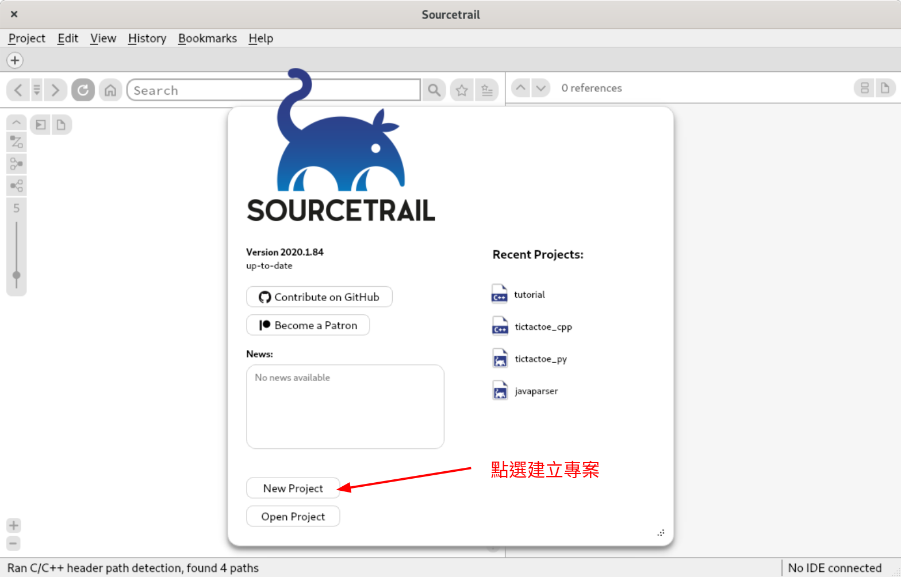
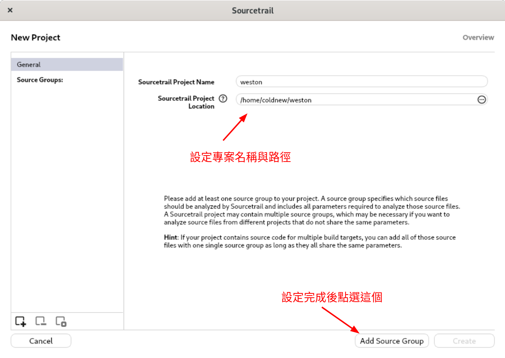
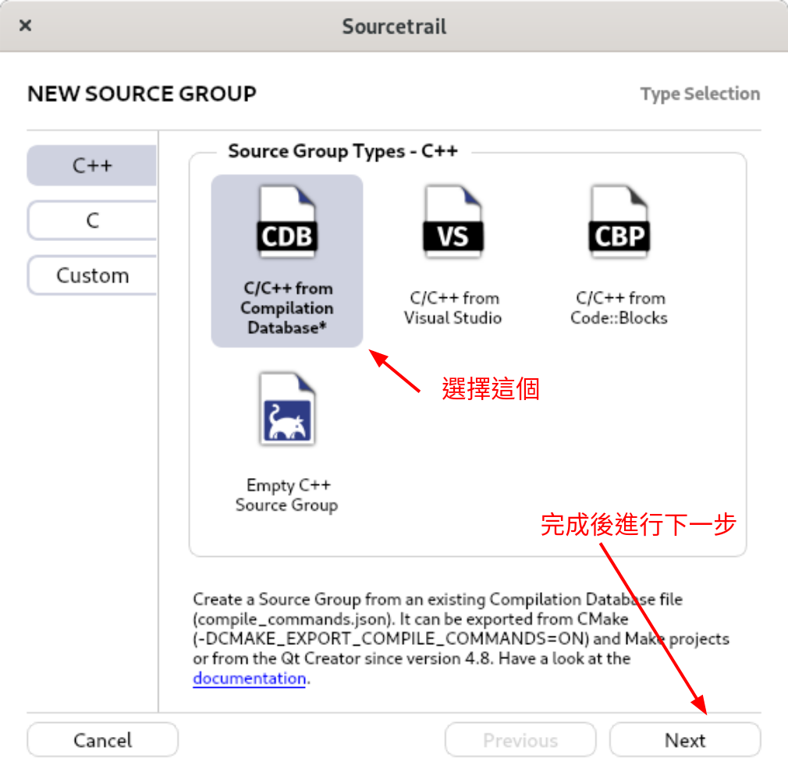
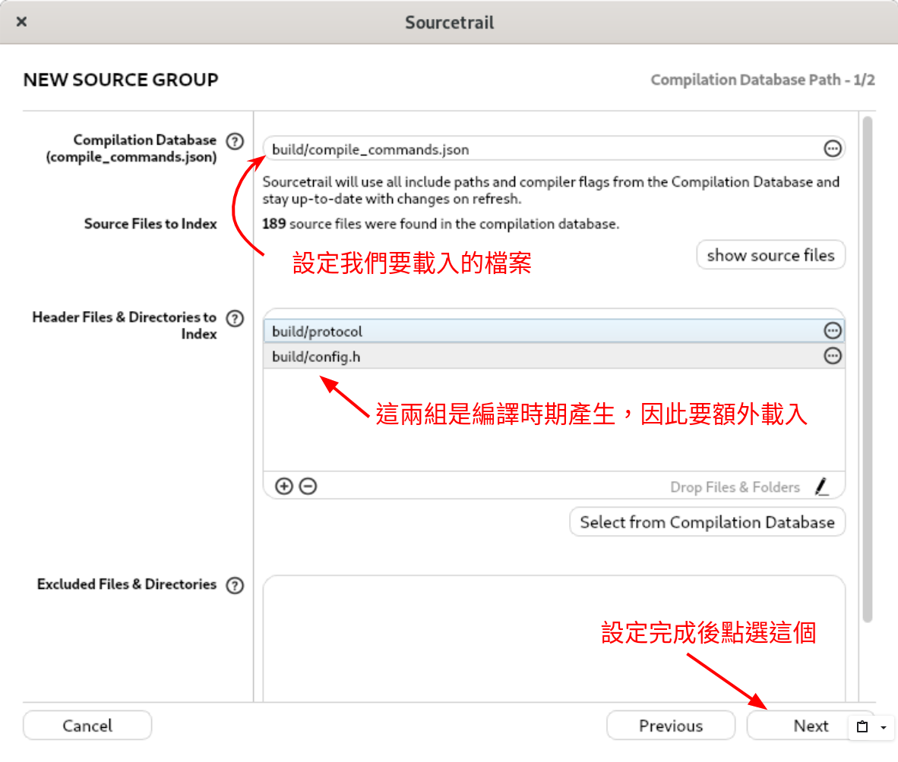
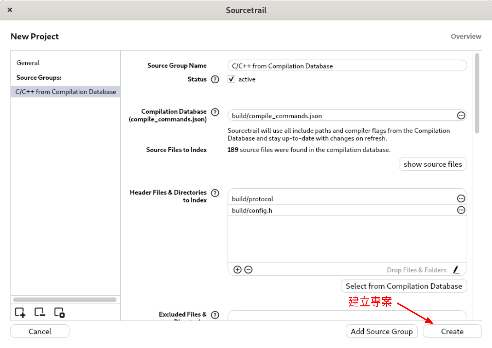
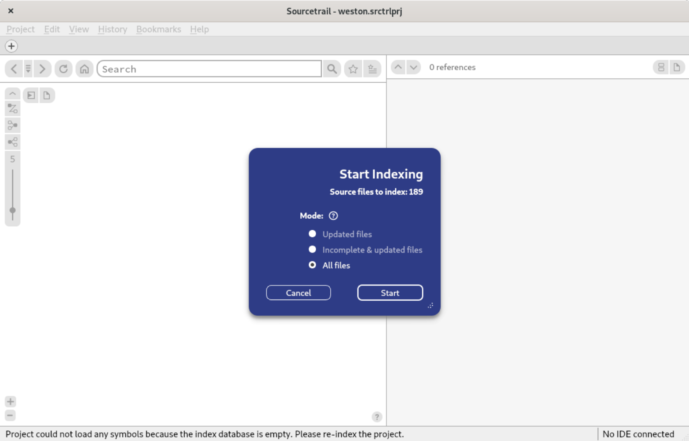
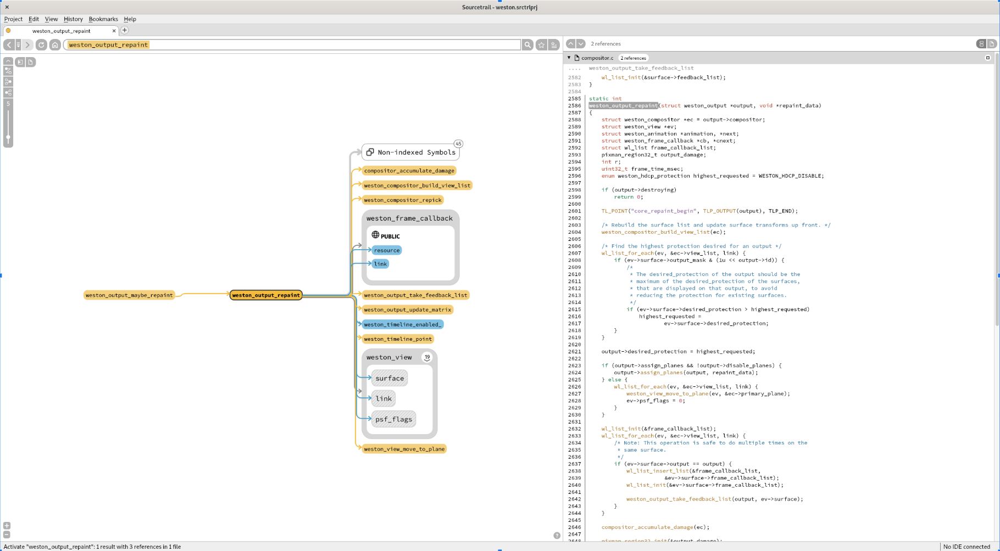

最近在啃 weston 的程式碼，突然想到可以透過 Sourcetrail 來協助閱讀程式碼，因此來試試看。
本文將講述如何透過 Sourcetrail 來協助閱讀以 meson 編譯系統為主的專案。其中 Sourcetrail 的安裝方式請自行查找，不額外贅述。
取得 weston
本文以 weston 為例，因此我們先來下載 weston 的程式碼
git clone https://github.com/wayland-project/weston.git
接下來進入到 weston 資料夾去
coldnew@gentoo ~ $ cd weston
本文撰寫時以 7.0.0 這個 tag 為主，因此請切過去，或使用當前的 branch
coldnew@gentoo ~/weston $ git checkout v7.0.0 Note: switching to '7.0.0'. You are in 'detached HEAD' state. You can look around, make experimental changes and commit them, and you can discard any commits you make in this state without impacting any branches by switching back to a branch. If you want to create a new branch to retain commits you create, you may do so (now or later) by using -c with the switch command. Example: git switch -c <new-branch-name> Or undo this operation with: git switch - Turn off this advice by setting config variable advice.detachedHead to false HEAD is now at 3180fa8a build: bump to version 7.0.0 for the official release
安裝編譯用的依賴
由於我們要查看 weston 的程式碼，因此最好讓系統滿足編譯 weston 的依賴，這樣在查找的時候才不會有什麼東西找不到對應的標頭檔或是對應的程式碼檔案。
由於筆者是 Gentoo Linux 的使用者，安裝依賴只要用以下命令就可以完成囉～
coldnew@gentoo ~ $ sudo emerge dev-libs/weston
其他 Linux 發行板的使用者則請參照該發行板的作法，或是參考 Building weston 一文來滿足系統依賴。
編譯 weston
安裝好編譯依賴後，由於我們需要透過 Sourcetrail 來查看 weston 的程式碼，因此需要透過以下命令去讓 meson 產生一些編譯前資訊
coldnew@getnoo ~/weston $ meson build -Dsimple-dmabuf-drm=auto The Meson build system Version: 0.52.1 Source dir: /home/coldnew/weston Build dir: /home/coldnew/weston/build Build type: native build Project name: weston Project version: 7.0.0 C compiler for the host machine: cc (gcc 9.2.0 "cc (Gentoo 9.2.0-r3 p4) 9.2.0") C linker for the host machine: GNU ld.bfd 2.32 Host machine cpu family: x86_64 Host machine cpu: x86_64 Found git repository at /data/Workspace/wayland/weston Compiler for C supports arguments -Wno-unused-parameter -Wunused-parameter: YES Compiler for C supports arguments -Wno-shift-negative-value -Wshift-negative-value: YES Compiler for C supports arguments -Wno-missing-field-initializers -Wmissing-field-initializers: YES Compiler for C supports arguments -Wno-pedantic -Wpedantic: YES Compiler for C supports arguments -fvisibility=hidden: YES .... skip .... Configuring weston-rdp.7 using configuration Configuring config.h using configuration Message: Documentation will not be built. Use -Ddoc to build it. Build targets in project: 170 Found ninja-1.9.0.git.kitware.dyndep-1.jobserver-1 at /usr/bin/ninja
另外，由於 weston 會在編譯的時候透過 wayland-scanner 來產生一些需要的 header 以及 .c 檔案，因此我們還是透過 ninja 這套編譯系統來將我們的程式碼編譯一下吧~
coldnew@getnoo ~/weston $ ninja -C build
ninja: Entering directory `build/'
[121/433] Compiling C object 'libweston/backend-rdp/13a5658@@rdp-backend@sha/rdp.c.o'.
../libweston/backend-rdp/rdp.c: In function ‘rdp_peer_context_new’:
../libweston/backend-rdp/rdp.c:748:2: warning: ‘nsc_context_set_pixel_format’ is deprecated [-Wdeprecated-declarations]
748 | nsc_context_set_pixel_format(context->nsc_context, DEFAULT_PIXEL_FORMAT);
| ^~~~~~~~~~~~~~~~~~~~~~~~~~~~
In file included from /usr/include/winpr2/winpr/wtsapi.h:25,
from /usr/include/freerdp2/freerdp/types.h:25,
from /usr/include/freerdp2/freerdp/freerdp.h:43,
from ../libweston/backend-rdp/rdp.c:85:
/usr/include/freerdp2/freerdp/codec/nsc.h:47:36: note: declared here
47 | FREERDP_API WINPR_DEPRECATED(BOOL nsc_context_set_pixel_format(NSC_CONTEXT* context,
| ^~~~~~~~~~~~~~~~~~~~~~~~~~~~
/usr/include/winpr2/winpr/winpr.h:53:31: note: in definition of macro ‘WINPR_DEPRECATED’
53 | #define WINPR_DEPRECATED(obj) obj __attribute__((deprecated))
| ^~~
[433/433] Linking target desktop-shell/desktop-shell.so.
完成後，你應該會看到 build/compile_commands.json 這個檔案，這就是我們要讓 Sourcetrail 載入的 JSON Compilation Database
Sourcetrail 建立專案
啟動 Sourcetrail 後，我們來建立新的專案

好了後，填一下專案名稱與路徑，然後進行下一步

由於我們要載入的是 compile_commands.json 這個檔案，因此選擇 C/C++ from Compilation Database

選擇我們要載入的 build/compile_commands.json 檔案，由於 config.h 以及 protocols資料夾 是編譯時期產生的檔案，因此要告知 Sourcetrail 載入這些傢伙。

都好了後，建立我們的專案

並讓 Sourcetrail 進行索引

Sourcetrail 查看程式碼
索引完成後，就可以透過 Sourcetrail 來查找我們的程式碼囉~
